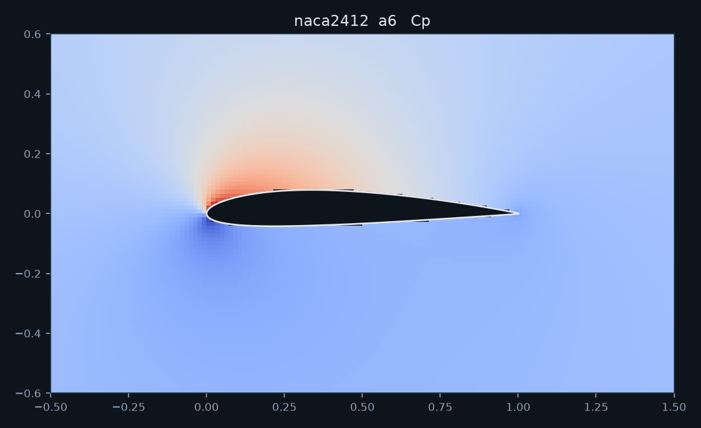
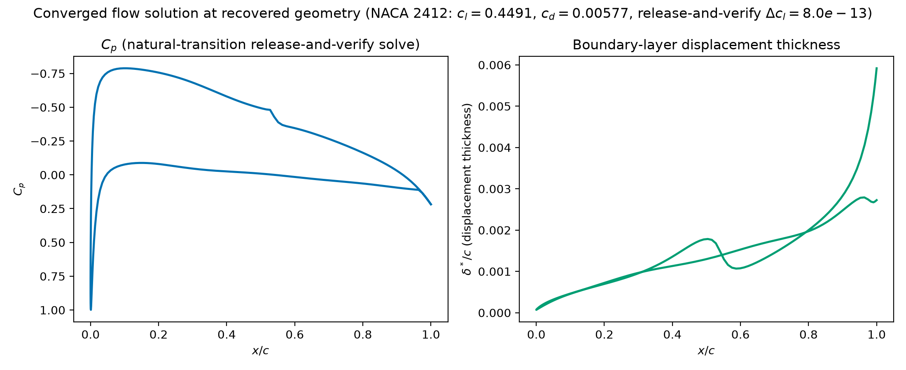
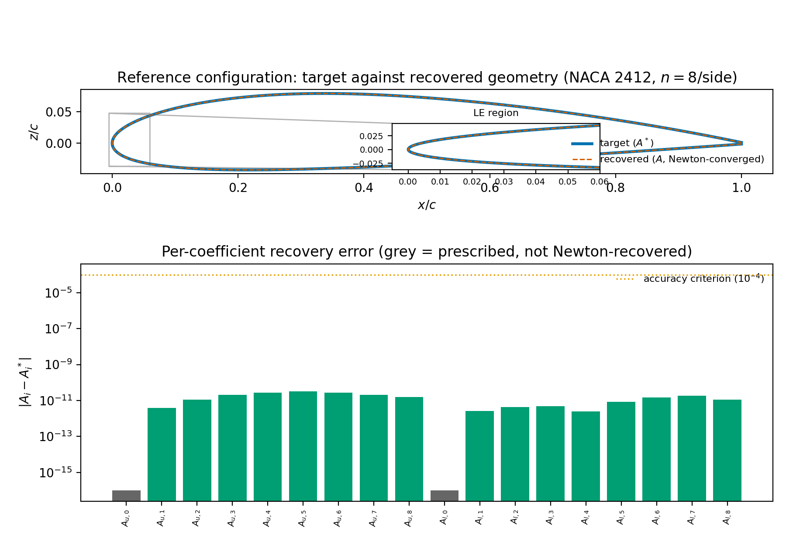
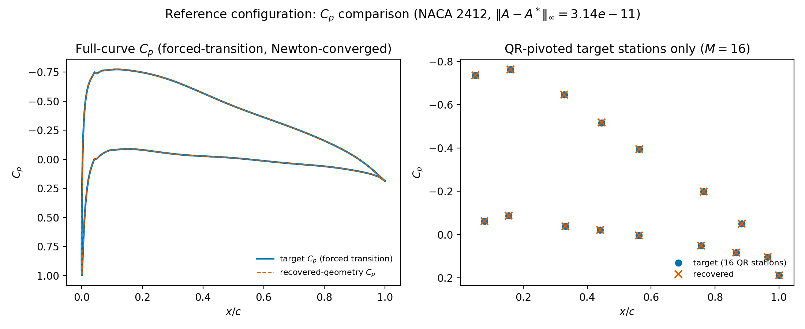
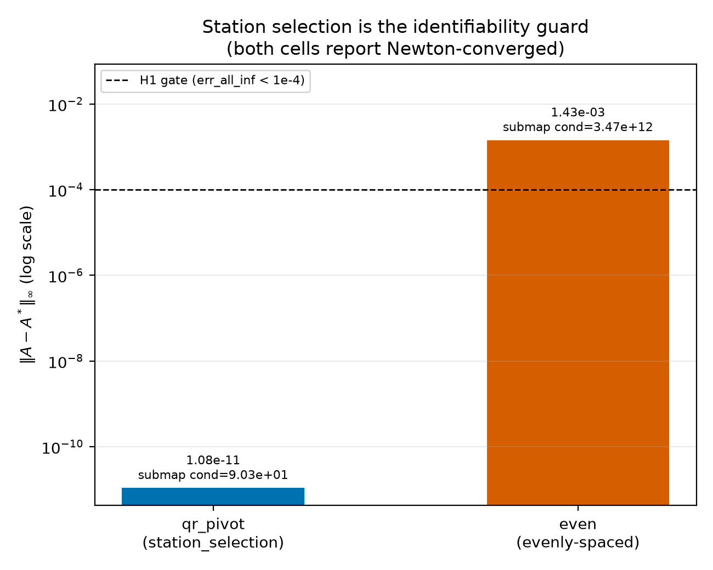
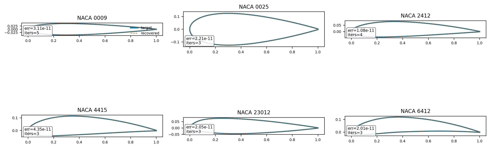
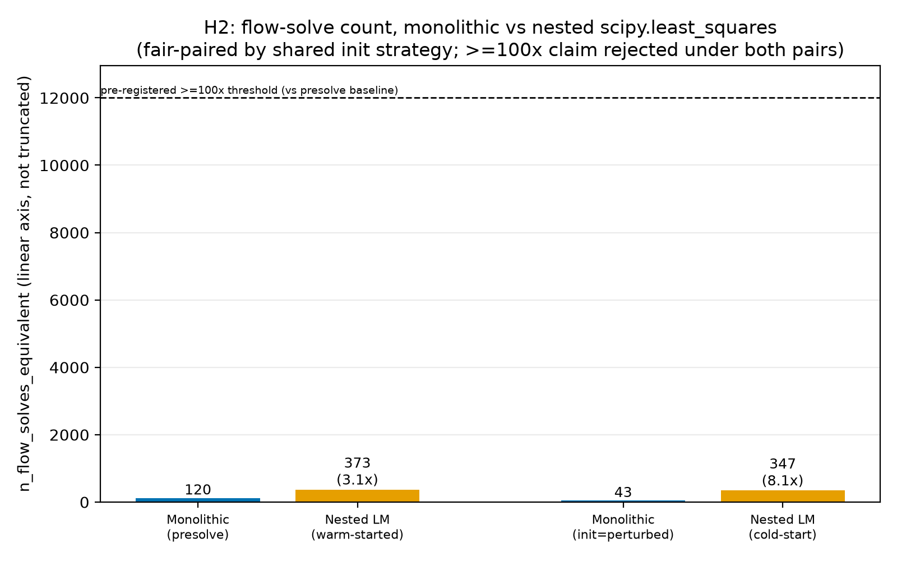
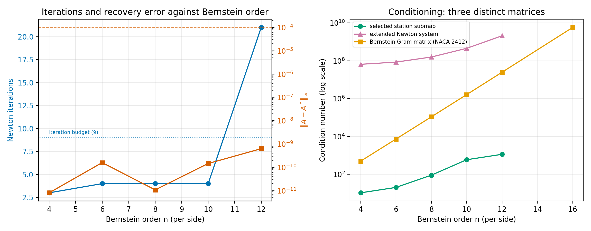
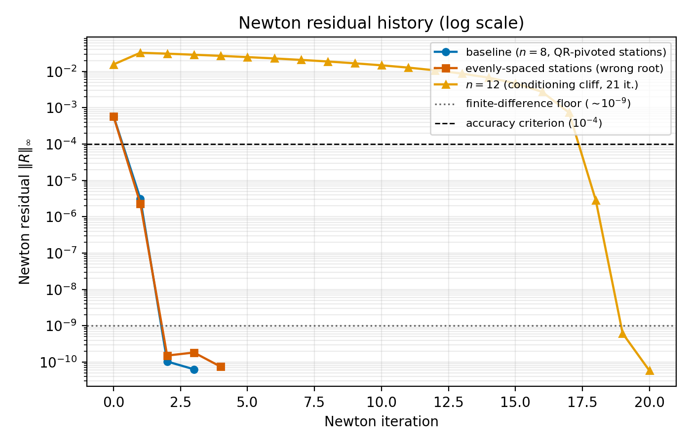

An interactive essay · CINS, the CST Inverse Newton Solver
Inverse Airfoil Design Without an Optimizer
Give the solver a target pressure distribution. It hands back the airfoil that produces it, by solving one square system of equations. No search loop, no scoring function, no thousands of flow solves.
Act I
The Problem
Inverse airfoil design has almost always been posed as a search. This project asks whether it needs to be.
01The problem
Design by trial and error
Inverse airfoil design starts from a wish: a pressure distribution, a lift target, a drag budget. The conventional way to answer that wish is optimization. Guess a shape, run the flow solver, score how close the result is to the wish, adjust the shape, and repeat.
Each guess costs one full flow solve. A gradient-based optimizer wrapped around that loop typically needs on the order of one hundred to one thousand solves before it stops improving, and stopping does not certify a unique answer. Two different starting guesses can converge to two different shapes that both score well against the same target.
Why this matters
An optimizer finds a shape that scores well against the target. It does not certify that no other, very different, shape scores just as well. Uniqueness is not something a scoring loop delivers on its own.
The flow solver itself is not the bottleneck. mfoil's coupled viscous and inviscid Newton system converges a single analysis case in a handful of iterations. The cost sits in the outer loop that calls the solver over and over while it searches for a shape.
Go deeperWhy not just parameterize more cleverly?
Better shape parameterizations, B-splines, PARSEC, or orthogonal modes trained on an airfoil database, reduce the number of free parameters an optimizer has to search over, and can suppress non-physical shapes. None of them changes where geometry lives: outside the flow solver's own unknown vector, so the outer loop is still a search, just over a smaller or better-conditioned space. This project takes the parameterization one step further. Instead of shrinking the search, it removes the search.
02The flow model
Coupled, not iterated
mfoil is not an inviscid solver corrected afterward by a boundary-layer patch. It solves a panel-method inviscid solution and a two-equation integral boundary-layer closure simultaneously, as one system, advanced by a single global Newton–Raphson iteration with an analytically assembled, sparse Jacobian. That coupling is why it was chosen as the Stage 1 testbed, not an incidental property of whichever solver happened to be at hand.
The distinction matters because this project's whole argument depends on appending CST columns to an existing Jacobian. An analysis code that solves the inviscid pass, then the boundary layer, then iterates between them until they agree, has no single global Jacobian to append to. mfoil already exposes ∂R/∂U as a sparse matrix; the extended system of Act II could not be built without that.
Inviscid panel solution
Linear-vorticity panels, freestream and stagnation-point formulation. Produces an edge velocity ue,inv at every surface node from the current geometry alone.
Integral boundary layer
Momentum-integral and shape-parameter equations march along each surface, closing on θ and δ* at every node.
Displacement thickness is the variable that actually does the coupling. Each surface node carries four unknowns solved together in one Newton step: momentum thickness θ, displacement thickness δ*, an amplification or shear-lag variable that tracks transition, and the edge velocity ue. Three residual rows close θ, δ* and the transition variable. The fourth is not one of those three; it is a mass-conservation row written directly in terms of δ*:
solve_glob.The boundary layer does not correct the panel solution after the fact; it thickens the effective body the panel method sees, through a transpiration term built from its own state. Solving that row alongside the three boundary-layer rows and the panel equations, in one Newton system, is what "coupled" means here, as opposed to the older practice of alternating an inviscid solve and a boundary-layer sweep until they stop changing.
| Quantity | Symbol | Role |
|---|---|---|
| Momentum thickness | θ | closed by the momentum-integral residual row |
| Displacement thickness | δ* | closed by the shape-parameter row; the coupling variable above |
| Skin friction coefficient | cf | evaluated from the closure correlations at the converged state |
| Kinematic shape parameter | Hk = δ*/θ | the transition/separation proxy; floor-clamped near 1.0 on the airfoil, tighter in the wake |


Why the transition closure gets pinned
The amplification/shear-lag row above uses an en transition closure that is continuous, C⁰, but not C¹, in the design variables: the residual has a kink exactly where a station crosses from laminar to turbulent. A Newton method wants a continuous Jacobian; a kink makes it chatter or stall in a way that looks geometric but is thermodynamic. The mitigation, forcing the trip location during the inverse Newton iterations and releasing it to solve naturally only afterward, for verification, is not a simplification of the physics. It is what keeps this particular row differentiable while the CST columns are being solved for. Act III shows the release-and-verify step this makes possible.
Act II
The Idea
A shape that is linear in its own coefficients can join the flow solver's Newton system as a first-class unknown.
03The geometry
A shape linear in its own coefficients
Class-Shape Transformation (CST) writes an airfoil surface as a class function multiplied by a weighted sum of Bernstein polynomials. The weights, the CST coefficients, are the only design variables.
The upper and lower surfaces sum the basis against the CST coefficients A and add a trailing-edge thickness term:
Drawn, not just written
Every claim in this project rests on that decomposition, so it is worth seeing rather than only reading. The class function sets the silhouette, round nose, sharp tail; the Bernstein terms are a fixed basis; the coefficients A are the only thing that changes from one airfoil to the next.
Class function C(ψ) = ψ0.5(1−ψ)1.0. Zero at both ends; the √ψ term gives the round nose its infinite initial slope, the (1−ψ) term gives the tail its finite one.
The nine order-8 Bernstein terms Si(ψ) (faint), and their sum weighted by NACA 2412's real upper-surface A (bold): Su(ψ) = ∑ Au,i Si(ψ).
The resulting surface, ζ(ψ) = C(ψ) S(ψ) + ψ ζT, for both real sections below. Same class function, same Bernstein basis; only A differs.
Two real sections, fitted
An order-8 Bernstein fit (n=8, nine coefficients per surface) to two sections from the project's own airfoil corpus: NACA 2412 (2% camber, the falsifiable-test airfoil used throughout this page) and NACA 6409 (6% camber, a high-camber section from the same corpus). Fit RMS is 3.99×10−5c and 9.60×10−5c respectively.
Fitted CST coefficients A0…A8, upper and lower surface, both sections. app/frontend/public/corpus.json (order-8 CST fit, 143 sections; ids naca:2412 and naca:6409)
Why the endpoint and integral coefficients matter
A0 alone fixes the leading-edge radius, and the fit closes it almost exactly: NACA 2412's A0,upper=0.17954 gives RLE=A02/2=0.016117c, against 0.016117c read directly off the fitted geometry. An fixes the trailing-edge boat-tail angle the same way: A8,upper=0.20657 combined with the fitted TE offset ζT,u=0.00126c gives tanβ=0.2053, β≈11.6°, again a single coefficient read, not a nonlinear angular search variable. The inscribed area is a linear functional of the full coefficient vector with closed-form Beta-function weights (§3.4 of the dossier); computed that way for NACA 2412's fit it agrees with a numerical quadrature of the same surface to 1×10−14. Each of these becomes one exact row in the constraint block G·A=b (Act II), not a penalty term evaluated on a rebuilt mesh.
The property this project exploits
The surface is a linear combination of A. Its derivative with respect to any single coefficient does not depend on A:
That matrix does not need to be re-derived as the shape changes during a Newton iteration. Recomputing it every step is, in practice, the single most common way to lose the performance argument for this whole approach.
Go deeperConstraints become linear rows too
Two endpoint identities follow directly from the surface definition:
A0 = √(2RLE/c) fixes the leading-edge radius, and
An = tanβ + ΔzTE/c fixes the trailing-edge
wedge angle. Inscribed area integrates to a closed-form Beta function of
the Bernstein basis, evaluated with scipy.special.beta, never
by numerical quadrature in a production constraint row. Under CST, every
geometric functional that matters becomes a linear row, g·A = b,
instead of a nonlinear predicate evaluated on a rebuilt mesh:
| Constraint | Under CST | Under a B-spline control-point wrapper |
|---|---|---|
| LE radius | A0=√(2RLE/c): linear, exact | implicit, via tangent points |
| TE thickness | ζT term: linear | geometric post-check |
| Boat-tail / wedge angle | An: linear | nonlinear angular design variable |
| Inscribed area | linear functional, Beta-function closed form | numerical, non-smooth |
| Curvature | rational function of A, differentiable | monotonicity predicate, non-smooth |
04The system
One square system, not two nested loops
Append the CST coefficients, and optionally angle of attack, directly to the flow solver's own unknown vector. Add one row per target-pressure station and one row per linear geometric constraint. Solve once.
| Equation | Rows | Source |
|---|---|---|
| R(U; x(A)) = 0 | Ntot | mfoil's own coupled viscous/inviscid residual |
| T(U) − Cptarget = 0 | M | one row per target-pressure station |
| G·A − b = 0 | K | one row per linear geometric constraint |
The block Jacobian, for the T7 winning configuration:
T7 configuration: Ntot=230 (200 surface nodes plus wake), nA=18, M=16, K=0, nα=0. J ∈ ℝ246×246
The square system is not incidental. It is checked at construction, before any Newton step is taken:
A guardrail, not a hope
An over- or under-determined system raises immediately, rather than
silently returning a non-answer. Act IV's ablation matrix exercises both
failure directions deliberately: adding or removing a single constraint row
from the baseline configuration raises "extended system not
square" before a single Newton iteration runs.
Because the target-pressure rows depend on A only through the converged flow state U, the T block carries no direct A-dependence, and because G is constant, the only genuinely new Jacobian block is ∂R/∂A. Its second factor is the cached derivative from Act II; its first factor reuses mfoil's own analytic sensitivity of the residual to a perturbed geometry.
Go deeperWhy the constraint target is target-consistent, not idealized
The right-hand side of each constraint row, b, is set from the target airfoil's own CST coefficients, b = G·A*, not from a textbook or idealized value. An idealized right-hand side would encode a leading-edge radius or trailing-edge wedge angle that does not quite match the actual target, and the Newton iteration would then be asked to solve a problem that is subtly inconsistent with its own target-pressure rows. This distinction surfaced during the T4 pre-solve work and is now a fixed rule for how every constraint row is built.
Act III
The Falsifiable Test
Take a known airfoil. Compute its pressure distribution. Hand only that distribution back, and see whether the original shape re-emerges.
05The test
Recovering a known airfoil from its own pressure distribution
The test is deliberately strict, and it is the project's own falsification criterion (T7 in the experiment ladder). A NACA 2412 section generates a target pressure distribution. Its CST coefficients are then discarded. The solver is given only the target pressure and asked to solve for the shape that produced it.
Configuration: eight Bernstein coefficients per surface (eighteen CST coefficients total), the two leading-edge coefficients prescribed rather than solved for, transition forced during the inverse iterations, target stations chosen by QR-pivoted selection.
Gate: <10−4 in ≤9 iterations. Measured margin: five orders of magnitude.
| Newton iteration | Residual | Reduction |
|---|---|---|
| 1 | 5.85×10−4 | n/a |
| 2 | 3.14×10−6 | ≈186x |
| 3 | 1.04×10−10 | ≈30,200x |
| 4 | 6.35×10−11 | at solver noise floor |


Release and verify
Transition is forced during the inverse Newton iterations, converge the shape first, then transition is released to its natural, free mode and the recovered geometry is re-solved in ordinary direct-analysis mode, independent of the inverse machinery. This is the real check: it compares lift and drag, neither of which entered the Newton system as a target, computed by a different code path.
Go deeperWhat would falsify this test
Four instrumented failure modes bound the claim: rank deficiency in the constraint rows (FM-1, guarded at construction, see Act II), conditioning collapse in the CST basis at high Bernstein order (FM-2, Act IV), an unobservable leading-edge mode when leading-edge stations are dropped without also fixing A0 (FM-3), and a non-smooth transition closure that looks geometric but is thermodynamic (FM-4, mitigated by forcing transition during the inverse solve and releasing it afterward). A run that fails any of these does not silently report success; it either raises at construction or fails the gate thresholds above.
Act IV
What the Experiments Showed
Fourteen ablations, two controls, a nineteen-section panel. The results that did not confirm the original hypothesis are the more informative ones.
06Station selection
Converged is not the same as correct
The ablation study varied nothing about the Newton solver and only one thing about the problem: which stations along the surface carry the target-pressure rows. The result is the central methodological finding of the study.
Newton reports converged: true, but at a different, self-consistent root than the target.
‖A−A*‖∞ = 1.43×10−3 · submap cond = 3.47×1012
The residual it zeroed is real. It is just not the target's residual.
Same solver, same target, same initial-guess strategy. Only the station selection changed.
‖A−A*‖∞ = 1.08×10−11 · submap cond = 90.3
Twelve orders of magnitude of conditioning separate the two selections.

Submap conditioning is a different matrix than the full extended-system Jacobian, and the two must not be conflated: the qr_pivot submap conditions at 90.3, while the full extended-system Jacobian at this cell's first iteration conditions at roughly 1.6×108. They answer different questions.
A genuine limitation, not a tuning knob
A Newton solve that reports convergence is not, on its own, evidence that the recovered shape produced the target pressure distribution. Two different, badly conditioned station layouts can each converge to a different but internally consistent root. Station selection is not a performance optimization here; it is what makes the inverse problem identifiable in the first place.
07Generalization
Eighteen of eighteen generable NACA sections
A single self-consistent recovery is a proof of concept. A panel of NACA four- and five-digit sections, spanning nine to twenty-five percent thickness and zero to six percent camber, tests whether the result generalizes.

Nineteen sections were configured; eighteen were scored. Two were excluded before scoring, not counted as solver failures: panel_0006, whose own target-pressure generation did not converge (a problem upstream of the inverse solve), and NACA 44012, whose 44XXX mean-line family is not implemented by the vendor NACA5 generator used to build panel targets.
What the sample size supports
Eighteen recovered sections is a point result, not a large-sample statistical claim. A Wilson 95% lower bound at n=18 sits at 0.824, below a pre-registered 0.9 threshold, for interval-arithmetic reasons rather than a solver shortfall: reaching a lower bound of 0.9 at 100% observed success requires n≥29. The panel is reported as what it is, not stretched into a confidence interval it cannot support.
08Cost
Fewer flow solves than a tuned nested optimizer
The pre-registered hypothesis was two to three orders of magnitude fewer
flow solves than nested optimization. The measured number is smaller than
that, and it is measured against a genuinely competent baseline rather than a
strawman: scipy.optimize.least_squares, Levenberg-Marquardt,
tuned convergence tolerances, fairly paired by initialization strategy, over
the same sixteen free coefficients.
| Pairing (shared init strategy) | Monolithic (flow-solve equivalents) | Nested LM (flow-solve equivalents) | Ratio |
|---|---|---|---|
| Presolve-init | 120 | 373 | 3.1x |
| Perturbed-init (cold start) | 43 | 347 | 8.1x |

Correcting the pre-registered claim
An order-of-magnitude reduction was hypothesized before this ablation ran. The measured 3.1x to 8.1x likely reflects that a modern, well-tuned LM implementation is a stronger baseline than the class of nested-optimization baseline the original hypothesis had in mind. The qualitative advantages, determinism, guaranteed local quadratic convergence, analytic constraint-row Jacobians, hold independent of the exact ratio.
09Limits
A conditioning cliff at Bernstein order twelve
Raising the number of CST coefficients per surface raises the resolution of the recoverable geometry. It also raises the condition number of the station-selection submap, and past a threshold the Newton iteration count jumps.
| Order n (per surface) | Iterations | ‖A−A*‖∞ | Submap cond. |
|---|---|---|---|
| 4 | 3 | 8.08×10−12 | 10.6 |
| 6 | 4 | 1.59×10−10 | 20.4 |
| 8 | 4 | 1.08×10−11 | 90.3 |
| 10 | 4 | 1.46×10−10 | 592 |
| 12 | 21 (fails 9-iter gate) | 6.31×10−10 | 1,144 |

Iteration count is flat at three to four steps through order ten, then jumps to twenty-one at order twelve, past the nine-iteration gate. Three conditioning series appear across this project's diagnostics, the CST fit/Gram matrix, the station-selection submap shown here, and the full extended-system Jacobian; they are distinct matrices answering distinct questions, tracked separately rather than conflated into one number.
Go deeperThe quadratic convergence tail, where it is visible
A three-point local order estimator, applied only where at least three residual values sit clearly above the solver's floating-point noise floor, scores a median convergence order of 2.15 across five estimable cells, meeting a pre-registered ≥1.8 threshold. Most converged cells reach the noise floor in exactly two post-initial Newton steps, too fast for the estimator to score at all, a reduction rate of roughly 150x per step that is not consistent with linear convergence.

Act V
What's Next
Stage 1 closed on an isolated airfoil. Stage 2 carries the same architecture into a cascade.
10The cascade
From an isolated airfoil to a cascade
Stage 1 targeted a single airfoil in an unbounded flow, solved by mfoil. Stage 2 extends the same monolithic architecture to a compressor or turbine cascade: a periodic row of blades, an inlet flow angle prescribed as a boundary condition, an outlet angle that is itself part of the solve, and a Kutta-consistent circulation row.
Compressibility is handled with a subcritical Karman-Tsien correction to start. Transonic comparisons, including LS89 mid-span pressure distributions, are deferred to a Stage 3 solver built on MISES: the Stage 2 design review found peak isentropic Mach numbers of 0.964 to 1.227 across all seven in-repo LS89 datasets, locally transonic to supersonic, outside a subcritical panel method's scope.
Station selection carries forward, and gets more important. A cascade surface has a covered passage where target stations can be geometrically inaccessible, so the identifiability finding of Act IV becomes part of the Stage 2 specification rather than an afterthought.
The falsifiable pattern repeats
Stage 2 does not introduce a new coupling idea. It adds boundary conditions and a periodicity kernel to the same square Newton system. The recover-a-known-case test that closed Stage 1 (Act III) is the same gate planned for Stage 2, against Gostelow's analytic cascade solutions.
S0–S1
Spacing s=106 reproduces Stage 1 exactly: a pinned regression against the isolated-airfoil result.
S2–S3
Gostelow analytic cascades, the Stage 2 gate; subcritical viscous cascade at Gostelow-derived loadings.
S4–S5
LS89 geometry-side checks and a MULTALL cross-check; transonic MUR pressure comparisons deferred to Stage 3.
11Evidence
Every number traces to a run manifest
Every experiment run writes an immutable manifest, config hash, git commit,
random seed, under experiments/results/. The figures on this
page are copied unmodified from
experiments/results/t8/figures/; none were redrawn by hand for
presentation. The nine-gate ladder below (T0 through T9) tracks Stage 1 from
environment bring-up to design review for Stage 2.